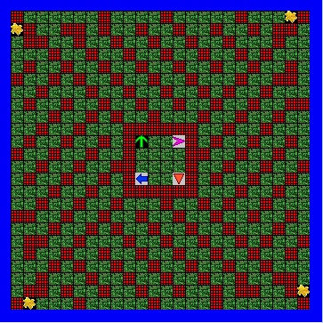
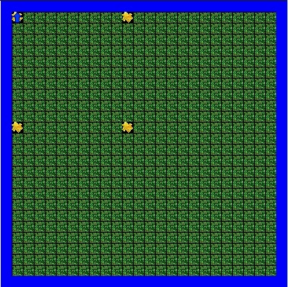
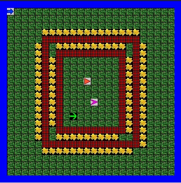
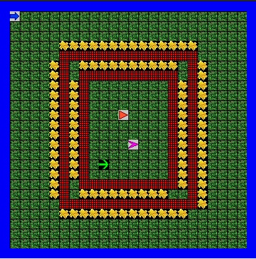
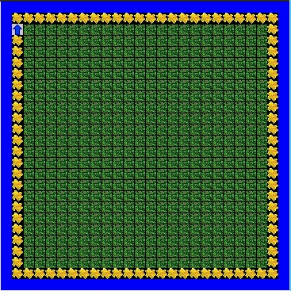
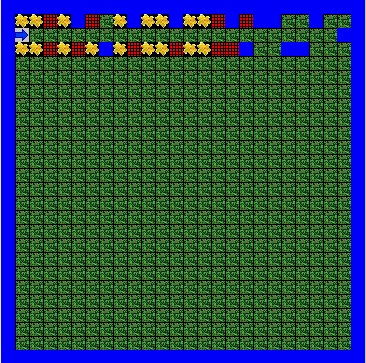

Jeroo Unit 2
 
Description
In Jeroo Unit 2, we learned how to write methods, Jeroo behaviors, and object instantiation of a Jeroo in a specific location . A method is a collection of program statements written to create a new behavior that a Jeroo can perform. We also learned how to use methods when the program statements were too long, and we used the methods to “shorten” our code on the main method section. Some frequently used methods are hop(); plant(); toss(); and turn();
Concepts Learned:
- Using and writing methods - In the labs, we had to create a single method that allowed Jeroo to navigate through the island. All methods have a name with parenthesis () and must have an open and close brace {}.
- How to create a Jeroo - In unit 2, we learned how to create different types of Jeroo that were all “different”, or the object instantiation of a Jeroo in a specific location. For example, Jeroo bob = new Jeroo (); //creates a Jeroo at (0,0) but Jeroo sue = new Jeroo (2,11,5) //creates a new Jeroo at (2,11) with 5 flowers.
Jeroo Unit 3
 

Description
In unit 3, we learned how to use loops, such as the while loop. The while loop is a block of code associated with a condition; As long as the condition is true, the loop will continue to run the block of code. Some frequently used methods are isFlower(); isWater(); and isClear(). In the labs we had to plan the methods and decide what was needed in order to complete the problem.
Concepts Learned:
- Loops and how to use them - The methods isFlower(); and isWater(); are boolean, they return as true or false. As long as the boolean condition placed inside the parentheses is true, the program will continue to run.
Jeroo Unit 4
 
Description
In unit 4, we were introduced to if statements and we practiced using loops in our program statements. An if statement is a block of code that is associated with a condition. The block of code may execute once or not at all depending on the evaluation of the condition.
Concepts Learned:
- If statements - If statements are placed inside the loop. The code will check to see if the if statement is true, if it is, the program will run. Then, it will check to see if it can move again.
- If else statements - In if else statements, if the condition is true do something 1 will occur. However, if the condition is false, then do something 2 will occur instead.